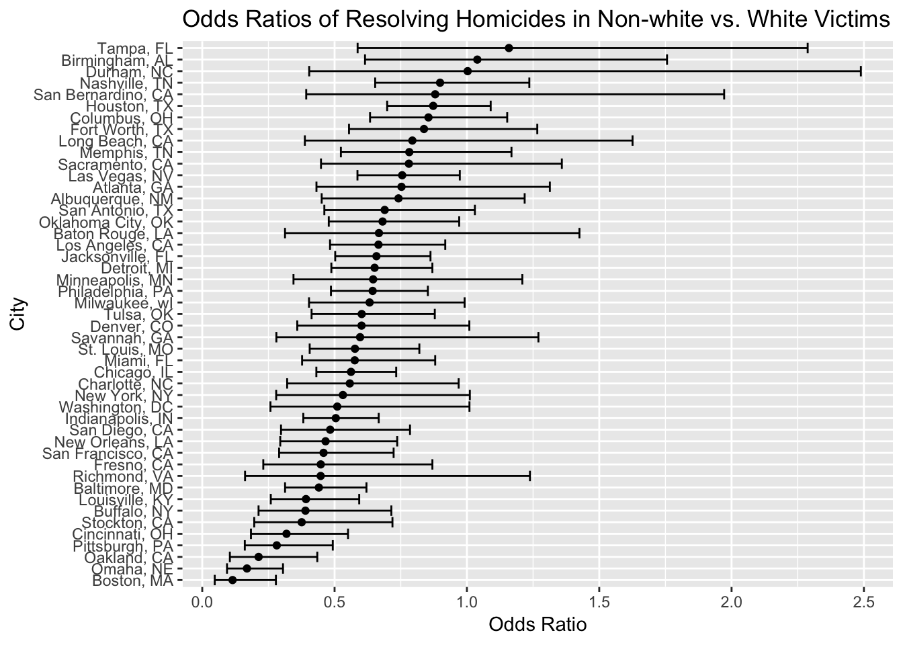

Homicide Data Analysis
# Reading in homicide data
url = "https://raw.githubusercontent.com/washingtonpost/data-homicides/master/homicide-data.csv"
raw_data = read_csv(url) %>%
mutate(city_state = str_c(city, ",", " ", state)) %>%
mutate(victim_age = as.numeric(victim_age))Data: homicide data collected by The Washington Post on more than 52,000 criminal homicides over the past decade in 50 of the largest American cities. The raw data contains information on the victim including name, race, and age as well as information on the location, date, and status of the crime itself. The dataframe has information on 52179 homicides in 50 different cities. More information on this dataset available here.
Visualizing homicide totals:
# Summarizing homicide totals
status_totals =
raw_data %>%
group_by(city_state, disposition) %>%
count(disposition) %>%
spread(key = disposition, value = n) %>%
janitor::clean_names() %>%
mutate_all(funs(replace(., is.na(.), 0))) %>%
mutate(unsolved = closed_without_arrest + open_no_arrest) %>%
select(-closed_without_arrest, -open_no_arrest) %>%
rename(solved = closed_by_arrest) %>%
mutate(total = solved + unsolved) %>%
filter(city_state != "Tulsa, AL") ## Filtering out "Tulsa, AL" because that is not a real place# Stacked bar chart of solved/unsolved homicides by city
status_totals %>%
rename(City = city_state) %>%
plot_ly(x = ~City, y = ~solved, type = "bar", name = "Solved", hoverinfo = "text",
text = ~paste("</br> City:", City,
"</br> Unsolved:", unsolved,
"</br> Solved:", solved,
"</br> Total:", total)) %>%
add_trace(y = ~unsolved, name = "Unsolved") %>%
layout(yaxis = list(title = "Total"), barmode = "stack")city_prop = status_totals %>%
filter(total > 2000) %>%
mutate(prop_solved = round(solved/total, digits = 2)) %>%
mutate(prop_unsolved = round(unsolved/total, digits = 2)) %>%
select(prop_solved, prop_unsolved, total) %>%
rename(City = city_state, "Proportion Solved" = prop_solved, "Proportion Unsolved" = prop_unsolved) %>%
arrange(desc(total))
city_prop %>%
kable() %>%
kable_styling(bootstrap_options = c("striped", "hover", "condensed", "responsive"))| City | Proportion Solved | Proportion Unsolved | total |
|---|---|---|---|
| Chicago, IL | 0.26 | 0.74 | 5535 |
| Philadelphia, PA | 0.55 | 0.45 | 3037 |
| Houston, TX | 0.49 | 0.51 | 2942 |
| Baltimore, MD | 0.35 | 0.65 | 2827 |
| Detroit, MI | 0.41 | 0.59 | 2519 |
| Los Angeles, CA | 0.51 | 0.49 | 2257 |
Calculating proportion of unsolved homicides for each city:
city_props =
status_totals %>%
mutate(prop = map2(unsolved, total, prop.test)) %>%
mutate(prop = map(prop, broom::tidy)) %>%
unnest() %>%
select(estimate, conf.low, conf.high) Plot with estimates and CIs for each city:
city_props %>%
filter(city_state != "Tulsa, AL") %>% ## Filtering out "Tulsa, AL" because that is not a real place
ungroup %>%
mutate(city_state = fct_reorder(city_state, estimate)) %>%
ggplot(aes(x = city_state, y = estimate)) +
geom_point() +
geom_errorbar(aes(ymin = conf.low, ymax = conf.high)) +
theme(axis.text.x = element_text(angle = 90))
Problem 1
Importing and cleaning the data :
url = "https://raw.githubusercontent.com/washingtonpost/data-homicides/master/homicide-data.csv"
raw_data = read_csv(url) %>%
mutate(city_state = str_c(city, ",", " ", state)) %>%
mutate(resolved = as.numeric(disposition == "Closed by arrest"),
victim_age = as.numeric(victim_age),
victim_race = ifelse(victim_race == "White", c("White"), c("Non-white")),
victim_race = fct_relevel(victim_race, "White")) %>%
filter(!city_state %in% c("Tulsa, AL", "Dallas, TX", "Phoenix, AZ", "Kansas City, MO"))Fitting logistic regression for Baltimore:
baltimore_df =
raw_data %>%
filter(city_state == "Baltimore, MD") %>%
select(resolved, victim_age, victim_race, victim_sex)
fit_logistic =
baltimore_df %>%
glm(resolved ~ victim_age + victim_race + victim_sex, data = ., family = binomial())Making table with relevant info :
fit_logistic %>%
broom::tidy() %>%
mutate(OR = exp(estimate),
OR_lower_bound = exp(estimate - 1.96*std.error),
OR_upper_bound = exp(estimate + 1.96*std.error)) %>%
select(term, starts_with("OR")) %>%
knitr::kable(digits = 3)| term | OR | OR_lower_bound | OR_upper_bound |
|---|---|---|---|
| (Intercept) | 3.274 | 2.067 | 5.186 |
| victim_age | 0.993 | 0.987 | 0.999 |
| victim_raceNon-white | 0.441 | 0.313 | 0.620 |
| victim_sexMale | 0.412 | 0.315 | 0.537 |
Based on the values obtained, the odds of a homicide of a non-white victim being solved in Baltimore are 0.441 times the odds of a homicide of a white victim being resolved, all else being equal. We are 95% confidence that the true odds ratio falls between 0.313 and 0.620.
Running regressions for all cities in dataset:
city_glm =
raw_data %>%
group_by(city_state) %>%
nest() %>%
mutate(models = map(data, ~glm(resolved ~ victim_age + victim_race + victim_sex, data = ., family = binomial())),
models = map(models, broom::tidy)) %>%
select(-data) %>%
unnest() %>%
mutate(OR = exp(estimate),
OR_upper_bound = exp(estimate + 1.96*std.error),
OR_lower_bound = exp(estimate - 1.96*std.error)) %>%
select(city_state, term, starts_with("OR")) %>%
filter(term == "victim_raceNon-white") Plotting odds ratios and confidence intervals:
city_glm %>%
mutate(city_state = fct_reorder(city_state, OR)) %>%
ggplot(aes(x = city_state, y = OR)) +
geom_point() +
coord_flip() +
geom_errorbar(aes(ymin = OR_lower_bound, ymax = OR_upper_bound)) +
labs(x = "City", y = "Odds Ratio", title = "Odds Ratios of Resolving Homicides in Non-white vs. White Victims")
From looking at this plot, we see that the odds ratios of homicide resolution in non-white victims is lower than 1 for most cities, meaning that white victims are more likely to have their homicides resolved. Many confidence intervals include 1 but most range below 1.
A site by Jaisal Amin
jaisal.amin@gmail.com